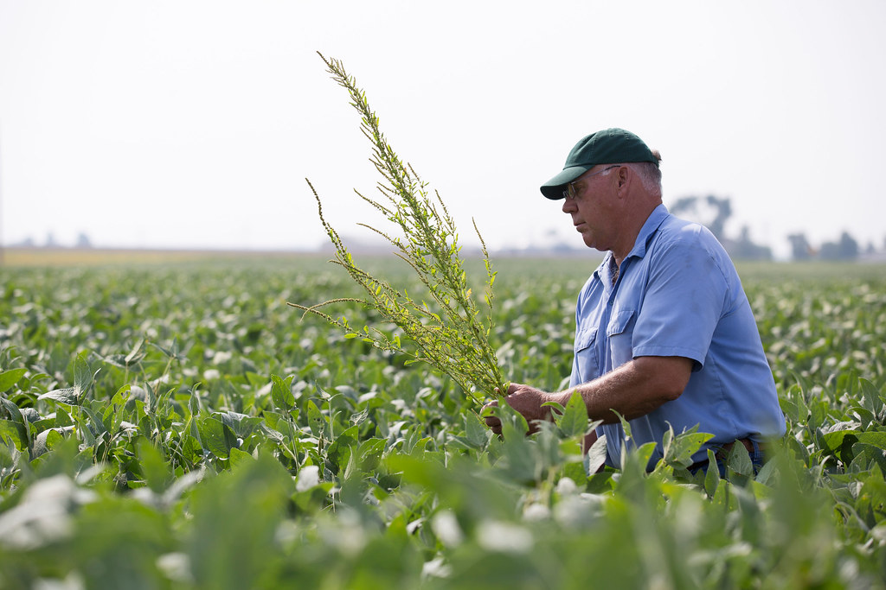

Complementary expertise, end to end
Healthy Hectare is guided by a high-level team whose roles cover the full arc of the work — from field agronomy to research design to formal documentation. Panel appointments will be announced here as they are confirmed.
The disciplines around the table
Each role exists for a reason: transition on a working commercial farm needs field judgment, research rigor, and the ability to turn both into evidence others can use.
Regenerative agronomy
Technical crop guidance and hands-on transition design, grounded in commercial farming reality.
Appointment to be announcedResearch design & implementation
Designing the baseline and comparison so the results stand up to scrutiny.
Appointment to be announcedMonitoring & interpretation
Tracking soil, plant performance, inputs, quality, and residues — and reading what the data means.
Appointment to be announcedReporting & formal documentation
Report writing and formal write-up, so findings become usable knowledge rather than anecdote.
Appointment to be announcedSector knowledge & relevance
Keeping the work connected to what markets, sector bodies, and regulators actually need.
Appointment to be announcedCrop safety-net during transition
Practical, rapid-response thinking so the farm is never left exposed while new practices bed in.
Appointment to be announcedThis combination makes Healthy Hectare relevant not only to growers, but also to researchers, regulators, sector bodies, and aligned partners who need credible transition evidence.
Bring your discipline to the benchmark
If your expertise belongs at this table — agronomy, research, monitoring, or evaluation — we would welcome a conversation.